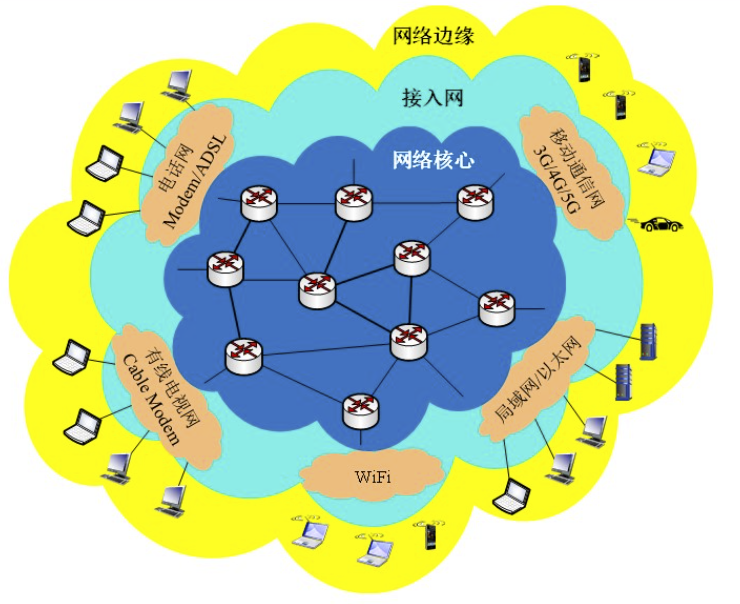
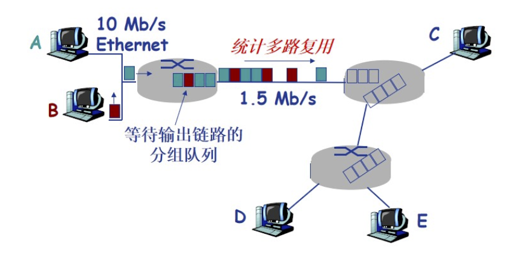
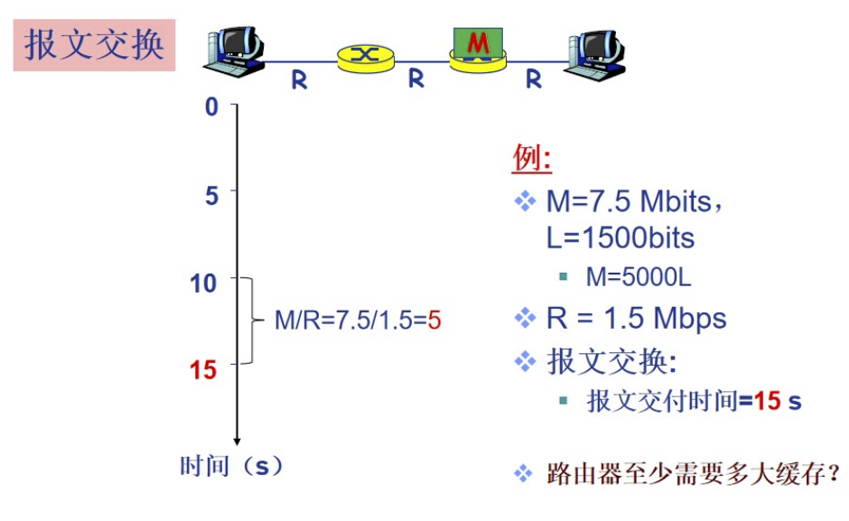
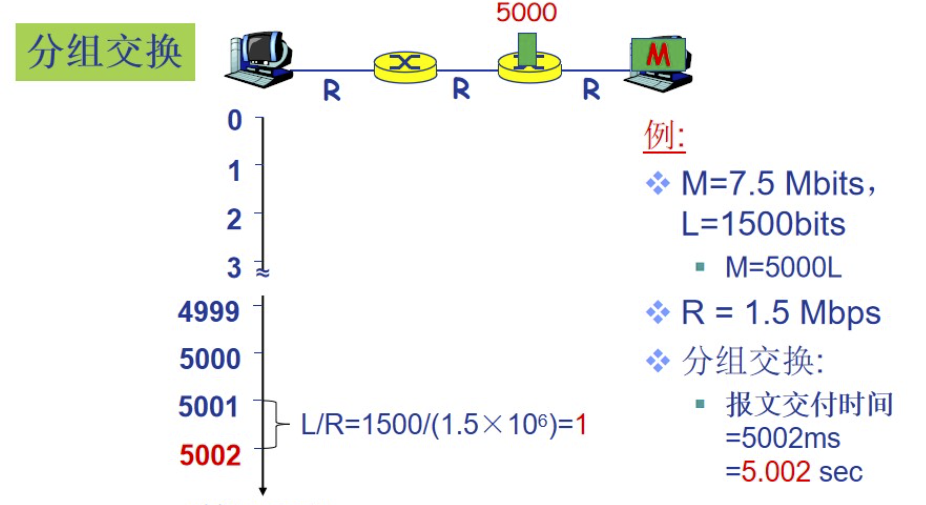
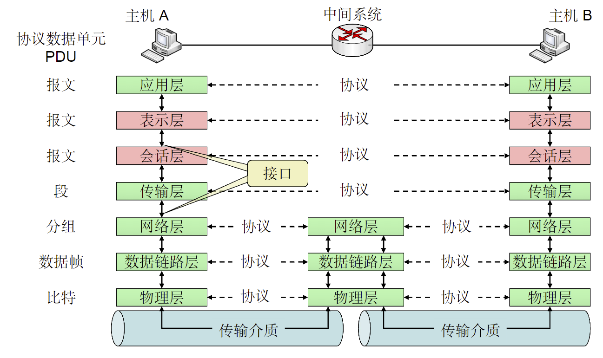

计算机网络概述
计算机网络基本概念¶
计算机网络就是一种通信网络
定义：计算机网络是互连的，自洽的计算机集合
- 自洽-无主从关系
- 互连-互联互通
如何互连主机？
- 通过交换网络互连主机
- 交换网络中包含大量的交换节点（交换机或者路由器）
什么是Internet？
- 全球最大的互联网络
- ISP网络称之为网络之网络
- 是数以百万计的互连的计算设备集合
- 主机=端系统
- 运行各种网络应用
- 分组交换：转发分组（数据包）
- 路由器
- 交换机
为网络应用提供通信服务的基础设施
- Web
- 电子邮件
- 网络游戏
- 电子商务...
仅有硬件连接，Internet能否顺畅运行？能保证应用数据的有序交付吗？
还需要协议！
硬件是计算机网络的基础，计算机网络的数据交换必须遵守事先约定好的规则
网络协议，简称协议，是为了进行网络中的数据交换而建立的规则、标准和约定
协议规定了通信实体之间的消息的格式、语义、顺序以及针对收到信息或发生的时间采取的“动作”
协议三要素¶
- 语法
- 数据和控制信息的结构或格式
- 信号电平
- 语义
- 需要发出何种控制信息
- 完成何种动作以及做出何种响应
- 差错控制
- 时序
- 时间顺序
- 速度匹配
协议规范了网络中所有信息发送和接受的过程
常见协议如：TCP/IP协议、OSI协议、HTTP协议、SMTP协议、FTP协议、DNS协议、SNMP协议、Telnet协议等
计算机网络的分类¶
按照覆盖范围
- 个人区域网PAN（Personal Area Network） ~10m
- 局域网LAN（Local Area Network）~1km
- 城域网MAN（Metropolitan Area Network）
计算机网络的结构¶

网络边缘¶
- 主机（端系统）
- 位于网络边缘，运行网络应用
- 客户/服务器应用模型
- 客户发送请求，接收服务器响应
- 客户与客户之间不能进行任何通信
- 如：Web应用，文件传输FTP应用
- P2P应用模型
- 无/不仅依赖专用服务器
- 通信在对等实体之间直接进行
- 如：Gnutella、Skype、QQ等
接入网络¶
如何将网络边缘接入核心网（边缘路由器）？
- 住宅接入网络
- 机构接入网络
- 移动接入网络
用户关心的是：带宽、共享还是独占？
接入网络：电缆网络¶
频分多路复用：在不同频带（载波）上传输不同频道
无线接入网络¶
通过共享的无线接入网络连接端系统和路由器
一般通过基站/接入点连接
- 无线局域网（LANs）
- 同一建筑物范围内（30m）
- WiFi6最高速率9.6Gbps
- 广域无线接入
- 通过电信运营商（蜂窝网），接入范围在几十km
- 带宽1Mbps~1Gbps
- 也称为移动互联网
网络核心¶
核心功能：路由+转发
路由：确定分组从源到目的地的传输路径
转发：将分组从路由器的输入端口交换到正确输出端口
数据交换¶
Q：如何通过网络核心从源主机到达目的主机？
A：数据交换
为什么需要数据交换？¶
若主机全连接，则需要\(\frac{N(N-1)}{2}\)条链路
数据交换的类型¶
- 电路交换
- 报文交换
- 分组交换
电路交换¶
典型电路交换网络：电话网络
电路交换的三个阶段：
- 建立连接（呼叫/电路建立）
- 通信
- 释放连接
若某条链路被其中一个电话的通话占用了，其他通话就不能再用了？
可以通过多路复用实现一个信道上传输多路信号或数据流
报文交换¶
源发送信息整体，如一个文件、一张图像
典型报文交换网络：电报通信网络
分组交换¶
将报文拆出来得到一系列相对较小的数据包
每个分组都由头和数据组成
分组交换需要对报文进行拆分和重组，产生额外的开销
分组交换：统计多路复用¶

分组交换：传输延迟¶
- 接收应用报文（消息）
- 拆分为较小长度为L的分组（packets）
- 在传输速率为R的链路上传输分组
报文交换与分组交换的比较¶
都基于存储-转发的交换方式
- 报文交换

- 分组交换

计算机网络性能¶
计算机网络体系结构¶
实体表示任何可发送或接收信息的硬件或软件进程
协议是控制两个对等实体进行通信的规则的集合
协议是“水平的”
任何一层实体都需要使用下层服务，遵循本层协议，实现本层功能，向上层提供服务
OSI参考模型¶
开放系统互连参考模型是由国际标准化组织提出的分层网络体系结构模型
OSI总共分为7层，每一层完成特定网络功能
| 结构 | 协议数据单元 |
|---|---|
| 应用层 | 报文 |
| 表示层 | 报文 |
| 会话层 | 报文 |
| 传输层 | 段 |
| 网络层 | 分组 |
| 数据链路层 | 数据帧 |
| 物理层 | 比特 |

直接通过协议互相联通的称为端-端层（End-End）
网络层-数据链路层-物理层称为互联网络
为什么需要数据封装？¶
- 增加控制信息
- 构造协议数据单元
- 控制信息内容
- 地址：标识发送端/接收端
- 差错检测编码：用于差错检测或纠正
- 协议控制：实现协议功能的附加信息